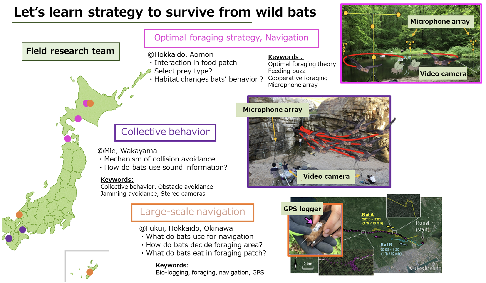
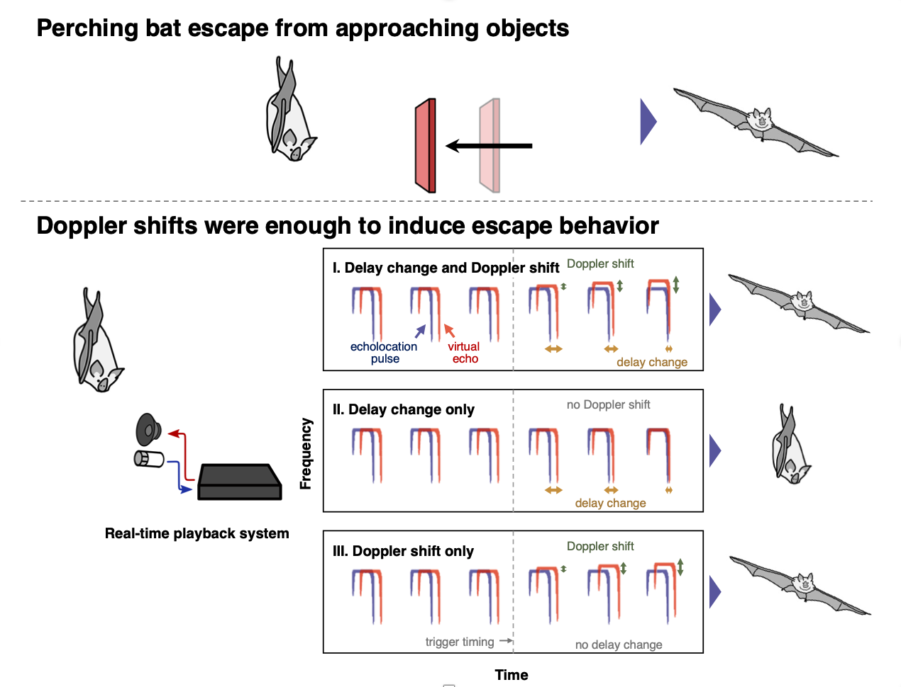
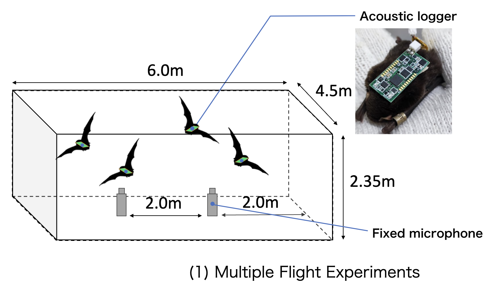
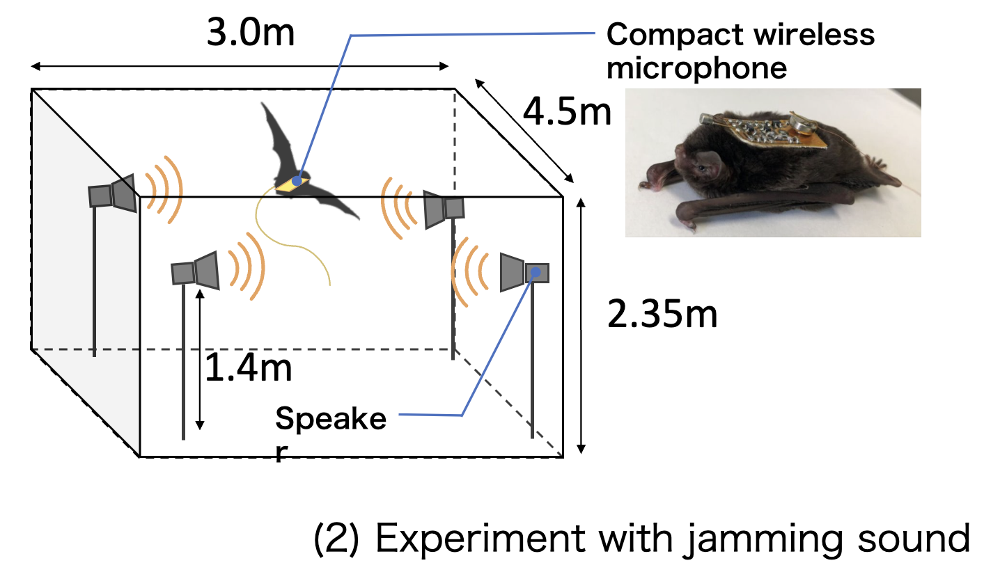
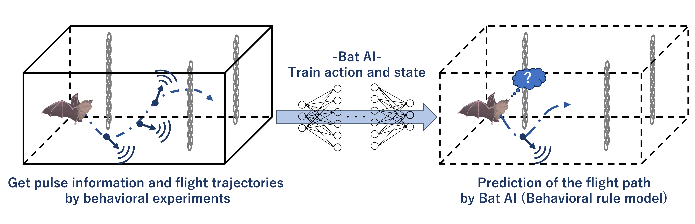
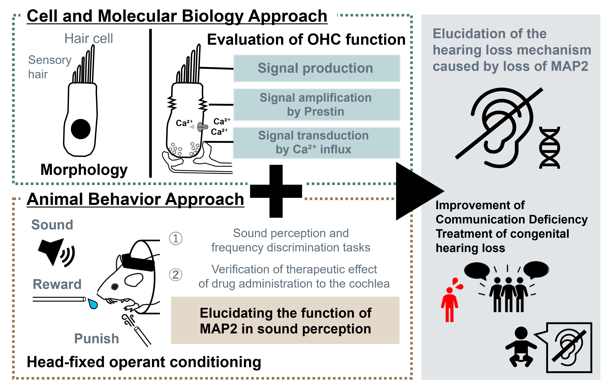
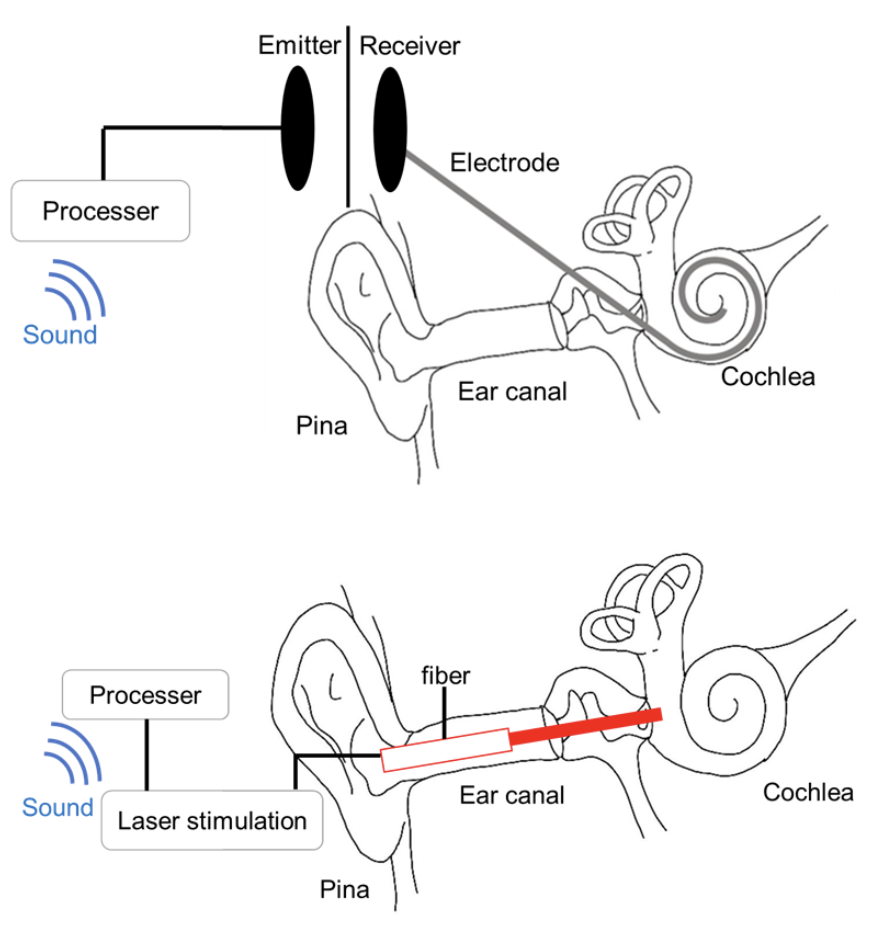
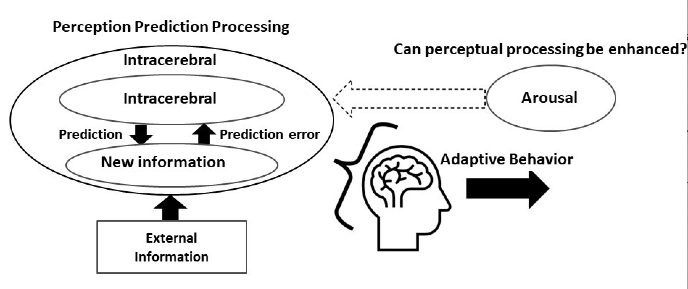
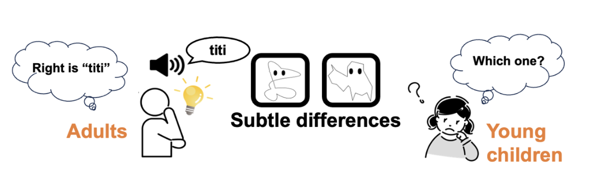

研究紹介Research
Last updated Aug 28, 2023.
コウモリ班 Bat Team
ヒト・ネズミ班 Human / Gerbil Team
神経行動コラボ班 Neuroethology Collaboration Team
コウモリ班 Bat Team
野外班 －野外におけるコウモリの音響ナビゲーション戦略を解明しよう！－
In the field, we can see dynamic flight and use of ultrasounds by echolocating bats, which we would never see in a laboratory. To learn from the refined strategies that wild bats use to survive and to elucidate the acoustic navigation algorithms they use, we are conducting three main experiments in the field research team. The research on optimal foraging focuses on efficient flight route selection and acoustic sensing at feeding grounds, as well as cooperative behavior between bats, from the perspective of the theory that bats behave to optimize foraging efficiency (optimal foraging theory). In the research on collective behavior, how bats flying in swarms share a limited space and forage without bumping into each other, and the mechanism of ultrasonic wave utilization and flight control are approached. In research on large-scale navigation, we use a bio-logging method to investigate what clues bats use to move in large-scale spaces and how they search for food patches. By verifying the hypotheses obtained through these field experiments using mathematical models and evaluating their rationality, we aim to apply them to the engineering field as effective bat algorithms.

室内班
私たちの研究グループでは，観測室内でのコウモリの行動の計測を通して，コウモリのセンシング戦略の解明を目指しています．
－How bats “looking” the world trough sounds－
Bats have been extensively studied for their ability and strategies for object localization in terms of echolocation. However, bats are thought to acquire not only the location of objects, but also more sophisticated and multidimensional information such as the shape, texture, and motion of the object. Therefore, we are working to elucidate what acoustic features of the echoes bats focus on in order to acquire this information. Specifically, we acquire the bat's emitted pulses with a microphone, then manipulate acoustic features in real time and play them back through a speaker to present a virtual object to the bat. From the acoustic manipulations and the bat's response, we can determine the bat's perceptual algorithm. Our previous work has shown, for example, that the perception of approaching objects is not based on temporal changes in echo delay, which encodes the distance to the object, but on Doppler shift, which encodes the velocity. In the future, we would like to combine operant conditioning and real-time playback to clarify how to recognize the shape of objects.

－コウモリの集団飛行時のセンシング戦略の解明－
Bats can fly in darkness by using echolocation, in which they listen to their own echoes of emitted ultrasound pulses to perceive their surroundings. Although the ultrasonic waves emitted by bats are similar from species to species, they are able to fly without collision even in narrow, dark spaces such as caves. How do bats distinguish only the sound they need in an environment where many bats are flying (i.e., acoustic interference environment)? Our group focuses on bats' superior ability to separate and listen to ultrasonic signals, and investigates this from the acoustic aspects such as time length and frequency. We are conducting behavioral experiments to study the ability of bats to avoid interference from two perspectives. (1) Multiple bats flying simultaneously in the experiment room, and We study the ultrasonic pulses emitted by individual bats. (2) The acoustic aspects of ultrasonic pulses emitted by bats are investigated by installing loudspeakers in the experiment room and flying bat in an environment that reproduces sounds similar to the ultrasonic pulses emitted by bats. Using two originally developed small wireless microphones and acoustic loggers, we have constructed an experimental system that can record in real time the sounds actually emitted and heard by bats. By conducting these experiments in parallel, we aim to elucidate the superior ability of bats to avoid interference, such as signal and reception technologies that are resistant to interference, and to gain new knowledge in the field of engineering, such as transmission and robot swarm control.


－Bat×AI：The Flying Supercomputer－
Bats get the target information such as existence, distance, direction, and character from the echoes instantly with a brain as small as a pea. Our team develops a "bat brain" using "AI" to reveal the "flying supercomputer" with a high-performance environmental information gathering system and linked navigation strategies. We get a lot of data for the AI by behavioral experiments. The learning parameters are the bat's action, such as the pulse information recorded by the microphones and the flight trajectory tracked by motion capture, and the environmental state. By simulating the AI learning these parameters, we can predict the bats' behavior and model the behavioral rules. Bat x AI = Bat Brain explores the process of action decision making.

ヒューマンエコーロケーション班
－Approaching "Seeing the World through Sound“－
Researches on bat echolocation are progressing, and it is becoming clear that bats flexibly change their acoustic properties of ultrasound depending on the purpose and situation.
Some visually impaired people also use echolocation to understand their surroundings, although not as ultrasonically as bats do, with their own tongue-tapping sounds.
However, there are still many mysteries about how bats and some visually impaired people "hear" the world using echolocation. Therefore, our research focuses on human in order to understand the sensory perception of "seeing the world with sound”.
Our group has been studying effective echolocation training methods and the learning process for people who have no experience of echolocation, since training improves spatial perception skills even in people who have no experience of echolocation.
In recent years, we have introduced a system that enables shape estimation using an eye tracker that can quantify information from acoustic simulation and eye tracking in real time, which enables visualization of sound propagation.
Currently, we are developing and researching a device in which a transmitter and a receiver are mounted inside a miniature dummy head (MDH) that simulates the shape of the human head, and which can be sensed in real time and operated by the subjects to avoid obstacles in maze environment.
With this device, we aim to enable simpler echolocation learning even for the visually impaired and utilize it in disaster relief situations.


ロボット班
－Applying Bat Echolocation to Robots!－
・Bat Robot

Bat Robot
Bats use a very simple ultrasonic sensing system with a "nose or mouth" (one transmitter) and "two ears" (two receivers) and skillful sensing techniques to understand the surrounding space and to fly with flexibility and grace, regardless of the terrain environment [1]. Our research team is developing a "Bat Robot" based on the results and discoveries from previous experiments on bats' echolocation behavior, and applying their ultrasonic sensing operations. We are incorporating various new knowledge and technologies into our robot, including high-performance sensors that can simulate the ultrasonic structures emitted by bats, real-time high-speed signal processing systems, and the recently popularized machine learning. By equipping it with "unique sensing techniques and ideas" specific to bats, what outcomes and effects can we achieve? Through evaluation and verification experiments using the Bat Robot, we will explore the essence of their clever sensing strategies that have not been discovered until now [2]. If we can engineer the echolocation behavior of bats, it will lead to the development of new sonar technology that can achieve highly accurate spatial understanding with fewer sensors (one transmitter and two receivers), which will contribute to sensing technology for automatic car driving and autonomous flying drones. We are dedicated to discovering the greatness of bats and applying it to the engineering field, continuously pushing forward the development and experimentation of new robots. This is conducted in collaboration with Murata Manufacturing Co., Ltd., and the Faculty of Science at Hiroshima University.
[1] Hase, K., "Bats enhance their call identities to solve the cocktail party problem." Communications Biology 1, 39, 2018.
[2] Yamada et al., "Ultrasound navigation based on minimal designed vehicle inspired by bio-sonar strategy of bats." Advance Robotics, in press.
・Experiments with robots that mimicked bat behavior

Equipped with Bat-Mimicking Sensing Algorithms
Bats have unique sensing strategies depending on their environment and task, such as obstacle avoidance and interference avoidance. Our research team evaluates the usefulness of these behaviors by implementing various bat-specific sensing techniques and ideas into robots. As a result, we have achieved robust navigation in complex environments, such as avoiding collisions with obstacles and running with multiple vehicles. The sensing operations through ultrasonic waves utilized by bats represent unique ideas not found in conventional engineering sonars. By conducting engineering validations of these concepts, we believe they can be applied to the development of new sonar technologies.
ヒト・ネズミ班 Human / Gerbil Team
感覚統合班
－Multisensory interaction is...？－
We live our lives everyday perceiving physical light, sound and vibration, respectively with sense of sight, hearing and touch.
These individual modalities have interactions in the process of sensory information to uniform a percept of the real world.
This phenomenon is known as multisensory interaction, which is seemed to enable us to perceive and adapt to the environment efficiently, sometimes induces illusory percepts which is incongruent with the reality.
(The double-flashes illusion, in which auditory input alters visual percept, is well known.)
We are working on illusions invoked by multisensory interaction, based on the interest of each member.
－Effect of wind-like sound on tactile sensation－
When hearing a mosquito flying around your ear, you may have experienced itchy sensation around your ears or neck.
Psychological experiment has shown that presentation of the certain sound, which is recorded by the specific microphone imitating real human head (HATS microphone) when its ear is being stroked, induced subjective tickling sensation as if your ear were being touched.
These results indicate a strong connection between audition and touch.
We hypothesize that this phenomenon is a part of audio-tactile integration, in which auditory input affects tactile perception, and aims to elucidate its underlying mechanism.
It is generally believed that temporal coincidence and spatial congruency which each given sensory information represents are important for multisensory integration.
We set research theme on "wind", which we hear and feel with our ears on a daily basis, and are conducting psychological experiments on human subjects to investigate:
・ Whether sounds that mimic wind blowing on the ear induce tactile percept of wind blowing
・ What qualitive/quantitative interaction exists in the audio-tactile integration.
We are also investigating the acoustic characteristics of sound stimuli that are associated with the elicitation of the haptic perception.
・ Whether sounds that mimic wind blowing on the ear induce tactile percept of wind blowing
・ What qualitive/quantitative interaction exists in the audio-tactile integration.
We are also investigating the acoustic characteristics of sound stimuli that are associated with the elicitation of the haptic perception.


神経生理班
－遺伝子から難聴メカニズムを紐解く－
Hearing loss causes various problems such as for communication and attention, hence lowering the quality of life (QOL) of those who suffer from it.
Hearing loss can be induced by a complex interplay of many factors, including gene, virus, stress, and aging. However, the exact mechanism remains unclear.
Our research team, in collaboration with the Department of Medical life systems, had shown that lack of MAP2 (Microtubule-associated protein 2), one of the major microtubule-related genes in the nervous system, is related to causing hearing loss. We have been focusing on the hearing impairment caused by MAP2 deficiency and conducting research on a wide range of topics----from the identification of cause to the search for a cure.

音声コミュニケーション班
It is known that excessive stress in childhood (e.g., child abuse) increases the risk of developing psychiatric disorders and social communication disorders in the future. However, the mechanisms of these disorders remain unclear, and precise treatment methods have not yet been established. We focused on communication between mother and child (mother-child) and between adult and adult (adult-adult) in rodents to clarify "the effects of childhood stress on communication and the development of its treatment" and "what the important factors for communication" are. We are researching to clarify "what are the important factors for communication" and "what are the important factors for communication."
-Understanding the Mechanisms of Social Communication Disorders and the Quest for a Treatment-
We have shown that the manipulation of rodent pups to mimic abandonment affects communication between mother and offspring and adult communication after growth. Furthermore, we found that the rodents who experienced abandonment tended to improve the disorder by repeated communication with healthy rodents. We expect that hormones controlling stress and sociality are involved in these changes. Therefore, we are trying to elucidate the mechanism of the disorder by identifying behavioral changes and active brain regions in healthy rodents (adults and children) when these hormones are administered.
-Understanding the Mechanisms of Mother-Infant Communication-
Like humans, gerbils use vocal communication between mother and offspring. One of Gerbil Young's most well-known vocalizations is the "isolation call." This call induces maternal behavior in which the mother returns the young to the nest by adding them to the nest with her mouth. The relationship between Isolation calls and Retrieval behavior can elucidate the factors necessary for inducing maternal behavior.
レーザー人工内耳班
-Development of non-invasive cochlear implants using infrared laser-
It is estimated that there are currently about 360,000 people in Japan with severe hearing loss. However, cochlear implants require a highly invasive surgical procedure in which electrodes are inserted into the cochlea. This makes it difficult for many people with hearing loss to wear cochlear implants. Recently, it has been reported that action potentials can be induced by irradiating nerves with infrared laser, and this has attracted attention as a new stimulation method that can replace electrical stimulation. While electrical stimulation requires electrodes to be in contact with the tissue, infrared laser stimulation can stimulate nerves without the optical fiber, which is the stimulation probe, coming into contact with the tissue. By applying the non-contact nature of infrared laser stimulation to cochlear implants, our group aims to develop a cochlear implant that can be worn as easily as an earphone. In a study on gerbils, we demonstrated the possibility of controlling sound perception by adjusting the stimulation parameters of the infrared laser. Psychological experiments on humans have also shown that an infrared laser cochlear implant can at least partially reproduce speech perception. We intend to continue our research toward the practical application of laser cochlear implants. 
高次認知班
高次認知班は，音声知覚や自己感、情動などの認知機能に着目し，ヒトを対象とした様々な観点からその行動・神経メカニズムの解明を目指しています．
―Why Do We Feel Uncomfortable Hearing Our Own Recorded Voice?―
It is known that we do not feel anything peculiar about our own voice while speaking, but we often experience a sense of discomfort or strangeness when hearing our recorded voice. This is because, during speech, the voice we hear is a combination of 'air-conducted sound,' transmitted through air vibrations, and 'bone-conducted sound,' which travels through the skull to the auditory organs. In contrast, recorded voices do not include the bone-conducted sound. This acoustic difference is generally thought to be the source of the discomfort. However, recent studies have reported that when people listen to their recorded voices without realizing it's theirs, they may find them more appealing. This suggests that the discomfort with recorded voices may not solely be due to acoustic differences.
Therefore, our research group is conducting behavioral experiments by manipulating the characteristics of recorded voices to explore the mechanism behind this discomfort. In the future, we aim to clarify the neural basis of this phenomenon using brain imaging techniques such as EEG and fMRI. Unraveling the mechanism behind discomfort with one's recorded voice is expected to contribute to the development of technologies for generating ideal voices and enhancing individual well-being.

―The Role of Emotion in Auditory Predictive Processing―
It is believed that the brain predicts based on past information to perceive rapidly changing environments instantly. This predictive processing of perception enables adaptive perception to the environment by updating the next prediction using the difference between the predicted result and the actual external information. On the other hand, it is known that perception is regulated by internal states such as emotions, and, for example, it has been reported that the level of arousal in emotions increases attention to the external world.
So, how do emotions affect predictive processing in perception? Our research group focuses on auditory predictive processing, which is essential for communication. By combining psychological experiments, data analysis such as Bayesian modeling, and functional brain imaging like fMRI, we aim to clarify the role of emotions in adaptive communication transmission. Ultimately, we hope to contribute to the development of effective treatment methods from the perspective of auditory processing, especially for individuals who struggle with voice communication in various situations.

音象徴班
Sound Symbolism is a phenomenon in which a short sound, such as a certain phoneme or syllable, evokes a particular impression (size, shape, etc.) (e.g., if you think of the sounds "bo" and "pi" as each representing a size, wouldn't you feel that "pi" is smaller than "bo"?) . This kind of correspondence between voice and the impression evoked by voice is believed to exist commonly among many people of different ages, languages, and cultures. We are studying the mechanism of Sound Symbolism and the relationship between Sound Symbolism and the learning and development of verbal sounds from a cognitive psychological perspective.
－Development of sound-meaning connections in young children－
Our focus is on the connection between sound and meaning in infants. Human language is acquired as infants develop. In particular, it is thought that the link between sound and meaning is acquired at the earliest stage of development. Therefore, we decided to explore the process of acquiring the connection between sound and meaning at each age. Although each person's environment, including the way he or she is exposed to language, is different, we believe that this research will help us to understand language development from a broad perspective.
Humans perceive the outside world by integrating information from various senses. For example, think of the time when you are watching a movie in a movie theater. The sound of the actors and characters on the screen is presented not from their mouths but from loudspeakers installed on the left, right, and behind them, but we perceive it as if it were coming from their mouths. In other words, we are combining visual information with auditory information. We believe that infants also have the ability to connect visual and auditory information in the same way. Therefore, we will use object naming to link visual information with the images that infants recall from sounds. We will conduct an experiment by creating an illustration of a character that attracts the interest of young children and asking them to select the sound that corresponds to the illustration to reproduce object naming.
Based on the results for each age group, we would like to investigate the language development of young children.

神経行動コラボ班 Neuroethology Collaboration Team
－Approach to decision-making process of bats based on their physiological signal and behavior－
This team is conducting unique research that combines the interests of two PIs (Prof. Shizuko Hiryu and Prof. Kohta I Kobayasi). Bats use not only echolocation calls, but also use social calls to communicate. We think they are good model animals for vocal communication, because they are primarily using sound information during in the dark night without retinal information. However, little is known about the information conveyed by their social calls. Here, we would like to clarify the emotions caused by their communication by measuring physiological indicators, their vocalizations, and their behavior. For example, when they heard distress calls, the receiver bats showed freezing behavior and heart rate increases[1]. This physiological response might be related to their state of fear. Through such experiments, we would like to approach to their internal decision-making process.


Heart rate changes when hearing distress calls（left panel）,
schematic vocalization situation of distress call （right panel）.
schematic vocalization situation of distress call （right panel）.
[1] Kazuki Yoshino-Hashizawa, Yuna Nishiuchi, Midori Hiragochi, Motoki Kihara, Kohta I. Kobayasi, Shizuko Hiryu; The distress context of social calls evokes a fear response in the bat Pipistrellus abramus. J Exp Biol 2023; jeb.246271. doi: https://doi.org/10.1242/jeb.246271